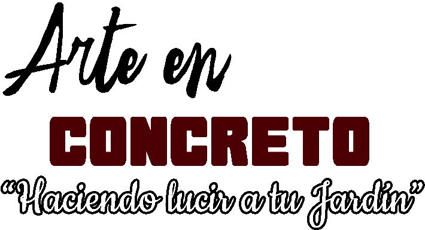
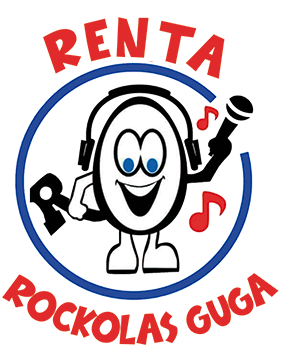
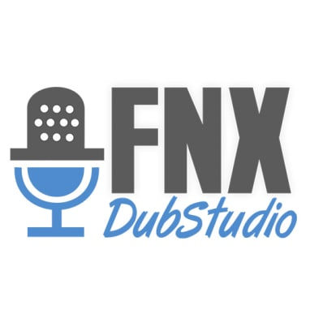
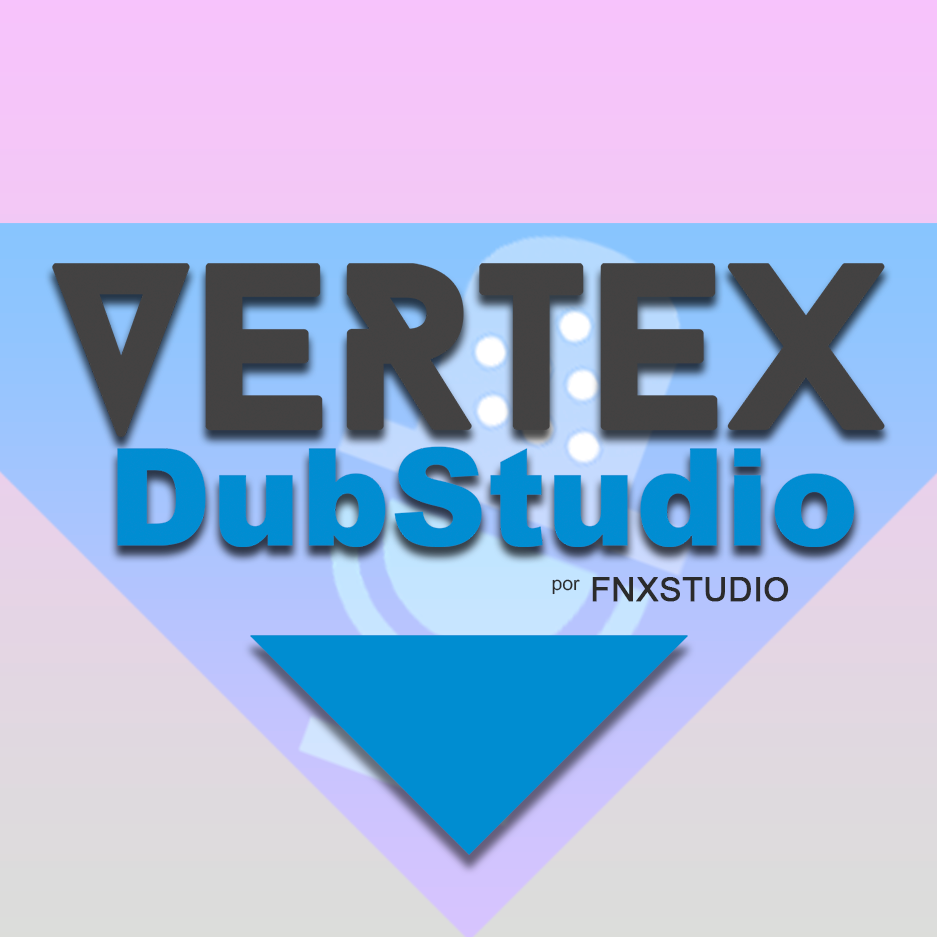

Se realizaron varios Voice Over para una campaña publicitaria,
con diferentes intenciones, siendo ademas el jingle de cierre de
cada comercial.
Arte en Concreto

Mi voz es la voz oficial de la marca, iniciamos el proyecto con este
comercial, que ha sido lanzado en redes sociales y en la plataforma de
Radio Cassanovas
Rockolas Guga

Rockolas Guga contrató nuestro servicio para la elaboración de un Voice Over,
nosotros nos encargamos el guión, parte creativo y por su puesto la voz.
FNX Studio

En FNX Studio se hace el fandub de la serie de Tian Guan Ci Fu, de la cual
se está buscando obtener la licencia oficial, Kevin Ruiz hace el doblaje
de Hua Cheng (rojo).
Vrtex DubStudio

En este proyecto de George & Jhonny, Kevin Ruiz es actor de voz, dándole
vida a uno de los personajes protagónicos (Jhonny).